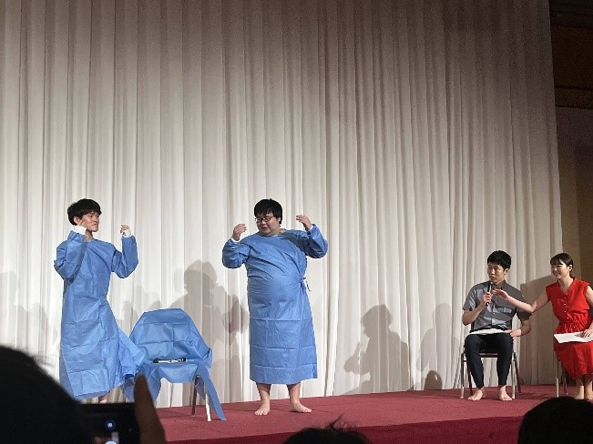
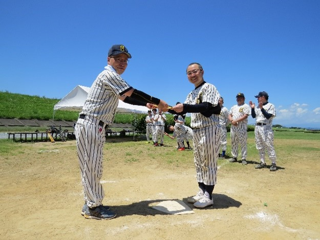
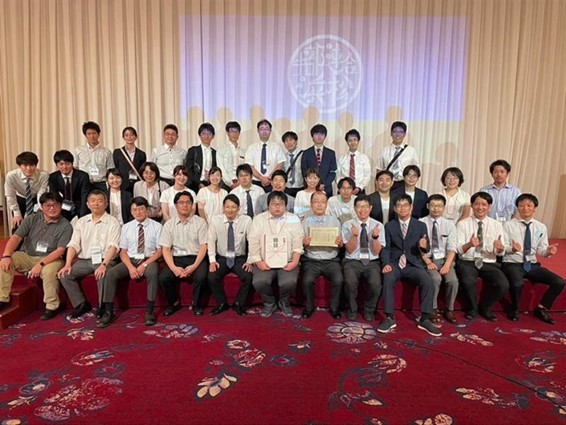

学会・体験記
第70回中部地方連合会 参加記
皆様は「学会」と聞くと何を思い浮かべますでしょうか？
症例・研究発表やポスター発表、懇親会などを思い描く先生方が多いのではないかと思います。
この夏、浜松医大主催で行われた第70回中部地方連合会は、伝統ある学会でありながら、通常とは一味違った熱い内容で執り行われました。
口頭発表・特別講演と大盛況の演芸大会
1日目はアクトシティ浜松の中ホールで一般演題や特別講演などの口頭発表が行われました。質疑応答も盛んに行われ、今後期待される研究や珍しい症例など新たな知見を得ることができました。
特別講演では浜松医大ナノスーツ研究部の河崎秀陽先生にご講演いただき、ナノスーツができるまでの経緯や今後の展望などをお話しいただきました。ショウジョウバエの幼虫のコーティングからヒントを得て、できるだけ生きた状態に近い微細構造を電子顕微鏡下で観察できるようにしたという衝撃的な内容で、他大学の先生方からも注目を浴びていました。
午後の懇親会では各大学の若手の先生達による出し物の発表会（演芸大会）が行われました。今年は中部地域の13大学が参加し、非常にクオリティの高い出し物が並びました。「チョコレートプラネットのTT兄弟」を模した信州大学が優勝を飾り、当科（浜松医大）はBritain's got talentで再ブレイクした「とにかく明るい安村」をテーマに三澤教授にもご協力いただき、見事準優勝を勝ち取りました。コロナ明け3年ぶりの大会ということもあり、会場は大盛況でした。

写真①：演芸大会（とにかく明るい安村）

写真②：野球大会（白熱したトーナメント戦）
天竜川沿いのグラウンドで駆ける野球大会
2日目は浜松医大と天竜川沿いの野球グラウンドを借り、トーナメント戦で野球大会が行われました。早朝からグラウンド整備やテント設営を行い、晴天で熱中症アラートが出ている中、選手も応援も一丸となって頑張りました。
貸し切りバスやキャンピングカーで来場された大学、また試合前のバント練習で高校球児並みに監督の指示が飛び交っている大学など、各校の気合の入りように驚かされました。
今年は信州大学、名古屋市立大学、三重大学が各グラウンドで優勝となり、当科の三澤教授から賞状が授与されました。浜松医大も大健闘しましたが、惜しくも準優勝となりました。手術室や外来診療では見られない先生方の意外な一面や、間近で見ないと分からないような細かな駆け引きなどを見ることができ、野球素人の私でも心から楽しむことができました。
出し物やスポーツを通じた強い絆
このように、通常とは一風変わった学会ではありますが、出し物やスポーツを通して医局内の絆がさらに深まり、また他大学の先生方とも非常に有意義な親睦を深めることができました。学術・臨床だけでなく、結束力の固い当教室の活動にご興味のある先生方は、ぜひお気軽にお声がけください！

写真③：全員揃っての集合写真